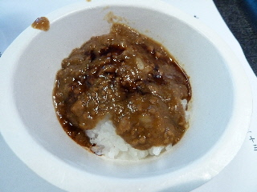
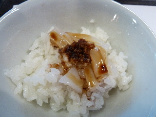
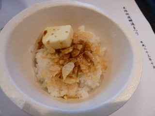
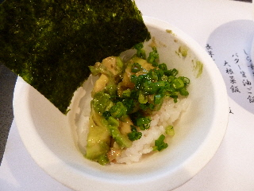
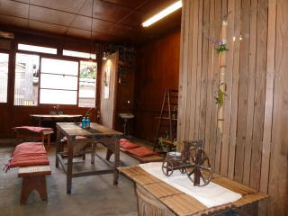
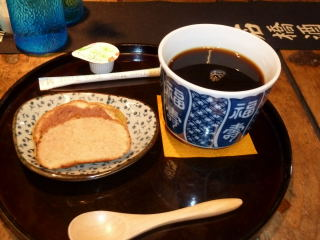
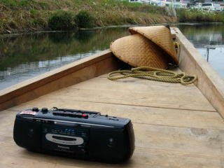
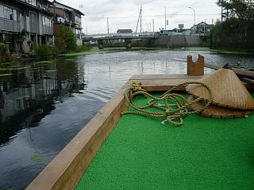

雲州ひらた大物産展でしょうゆかけご飯を食べました
2011/10/23
州ひらた大物産展で、木綿街道にある旧石橋酒造では「木綿街道醸造まつり」をやっていました。
しょうゆかけご飯を楽しむイベントです。
実物はこんな感じです。




紙の容器が一杯100円で、陶器が200円だったと思います。
メニューは、卵かけご飯、十六島のりご飯、カリフォルニアご飯（写真）、しらすおろしご飯、バター醤油ご飯、大根菜飯、長芋となめたけご飯、ステーキご飯、わさびささみご飯、出西しょうがご飯、クリームチーズご飯、豚肉もろみご飯、ポテチバターご飯（写真）、醤油カレーライス（写真）、イカ刺しご飯（写真）、ころころウインナーご飯、しその実ご飯がありました。
種類が多いですね。どれを食べようか迷いながら選びました。
醤油が何種類かおいてあって、好きな醤油を選んでかけてたべました。
後から思ったんですが、半分ずつ違う種類の醤油をかけて食べれば食べ比べが出来て良かったかも？って思いました。またの機会があればそうしたいと思います。
木綿街道カフェ・ことんに行きました。
2010/10/23
雲州ひらた大物産展がやってて、今日は木綿街道の旧石橋酒造がカフェになっていました。

落ち着いた店内に、ちょっとした小物がいろいろと置いてありました。
店内が広いので、見るところが沢山ありました。

コーヒーとラスクです。ラスクは平田のレストラン「ラルカンシェル」のもののようです。
ドリンクの器もお洒落でした。
ラスク美味しかったです。普段も食べたいって思いましたが、小さいラスク3枚150円と思うと普段は食べれないですね。
他にもスイーツで、フルーツケーキと生姜の効いたチョコケーキがあったんですが、私がこのラスクが一番気に入りました。
雲州ひらた大物産展
2009/10/25
去年のこのイベントは寒かった印象があったんですが、今年はそんなに寒くなたったです。
前回は11/9に行っていたので、時期が少し早くなってますね。
無料の平田舟に乗りました。

綺麗な川ではないですが、船で遊覧するのってレジャー気分が味わえて良かったです。
他にも本石橋邸が無料公開されていて、ちょっとお得なイベントでした。
岡茂一郎商店で、しょうゆアイス（カップアイス）を食べたんですが、ここのアイスは醤油味がとっても濃かったです。いままで食べた醤油アイスで一番濃いかも。
醤油味と砂糖味で、みたらし団子のタレの味がするアイスクリームでした。和風スイーツですね。
雲州ひらた大物産展
2008/11/09
今年は木綿街道、シェルピア、アスティー本町と広いエリアで開催してました。ぐるっとまわってみたんですが、私が行った時はたまたまイベントをあまりしていない時間だったみたいで、ちょっと寂しかったです。あと、天気があまりよくなく寒かったので、よけいにそう思ったかもしれません。
平田舟無料乗船があったので乗ってみました。

普段舟に乗る機会ってなかなかないので、いい経験が出来ました。小さな船だったので水面がとても近くにあり面白かったです。